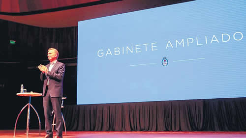

Real Chubut - Agencia de Noticias


Macri dice que tiene 2019

Durante la reunión en el CCK con sus funcionarios, ratificó el modelo y los alentó a trabajar para lograr la reelección.
Mientras su familia pasaba por Comodoro Py, Mauricio Macri se dedicó a hacer campaña por su reelección. Fue en la reunión de gabinete ampliado, en la que el Presidente arengó a su tropa hacia 2019. “Juntemos toda la energía del mundo porque el año que viene va a ser uno donde la Argentina va a confirmar que entendió que este es el rumbo”, afirmó Macri, quien –pese a la hecatombe económica– se mostró confiado en que logrará la reelección en 2019. El mandatario ensayó nuevamente sus lágrimas en el CCK, al igual que en Colón, mientras coreaba: “Argentina, Argentina”.
Fue la segunda reunión de los dirigentes macristas, tras el encuentro del Consejo Directivo Nacional del PRO. El objetivo en los dos casos fue el mismo: prender los motores hacia la campaña 2019. En eso se centró el discurso de Macri, parado en el escenario como un pastor evangélico ante los 1200 funcionarios que lo observaban, lo aplaudían, lo vitoreaban.
“La Argentina va a confirmar que entendió que este es el rumbo”, les aseguró Macri. “Como nunca antes en mi vida estoy cada vez más seguro, convencido, que es por acá, que no hay otro camino, que es el que hemos tomado, el de la verdad, el del trabajo, el del debate”, afirmó Macri, quien viene evitando hablar de los problemas judiciales del holding familiar y de la economía.
Alejado de los buenos números en las encuestas del comienzo de su gestión, Macri se refugió en la buena onda que sintió durante los días de la cumbre del G-20, en la que se codeó con la elite mundial. Sostuvo que deben recordar esos días “aquellos que tal vez no tienen esta visión de convencimiento profundo”. También les aseguró a sus funcionarios –sin que se registraran risas– que su gobierno se dedicó a enfrentar a los privilegiados: “Enfrentar todos estos privilegios es salir de la comodidad. Es muy duro. Los que pierden esos privilegios ya se han armado sus pequeños ejércitos de presión, sea mediática, judicial, rosquera, lo que sea, para que nadie les vaya a sacar lo que tienen y pelean con las peores armas. Uno en esa pelea está casi solo”, dijo.
Luego dejó en claro quienes son para él los privilegiados: “Te rodean físicamente los edificios, te los toman, te toman la plaza, te arman lío, te putean; cuanto más privilegios pierden más violentos se ponen”, aseguró.
Reclamó un futuro “con verdadera equidad” y volvió a poner ejemplos sobre trabajadores: “Donde todos trabajemos lo mismo, la misma cantidad de horas, la misma cantidad de años. No podemos vivir en una sociedad donde si querés pasar por acá tenés que pagar”. Para los distraídos: no fue una alusión a las empresas de peajes de su familia por las que el juez Claudio Bonadío citó a su padre y a su hermano.
“Si no, es volver a creer en las mismas recetas mágicas que hubieron durante 70 años. Nada se puede construir sin constancia, sin persistir. Tenemos que ser coherentes”, afirmó sobre el peronismo. Se quejó de los empresarios que le dicen, según afirmó, “la mía está, la mía esa no la vas a tocar” y subrayó que “eso no es ser coherente”. No aclaró en qué contexto le dicen que la “suya” está.
Con la seguridad y la mano dura como uno de los ejes de campaña para 2019, Macri también destacó que van a discutir el año que viene “cuál debe ser el rol de la Justicia”, al que denominó como “el poder más importante”. “Un delincuente tiene que estar preso, no puede estar en la calle al día siguiente o a las dos horas”, aseguró, pocas horas más tarde de que su hermano Gianfranco Macri saliera caminando de Comodoro Py.
El presidente aseguró que se está debatiendo en su gobierno “la igualdad de género. Eso nos está curando. La sociedad argentina se está curando”. Lo escuchaba complaciente su auditorio, con una abrumadora minoría de mujeres.
Y aprovechó para hacerle un chiste al gobernador de Jujuy, Gerardo Morales, por su próximo casamiento: “Está hecho un pendejo. Le volvió la vida”, se divirtió junto al resto de los hombres. Y siguió con los chistes sobre el matrimonio y la tiranía de las mujeres: “Bienvenido al club de entender que al final del día el verdadero poder sobre casi todo lo demás en este mundo lo tiene la mujer”.
“No tenemos todas las respuestas, pero juntos todos los días, aunque nos vayamos un poquito a la banquina, pero mantenemos la dirección, el límite es casi infinito”, aseguró. Su discurso terminó con los clásicos “Si, se puede”, y el nuevo “Argentina”. Y dicen que se lo volvió a ver lagrimear.
Fuente: Pagina 12